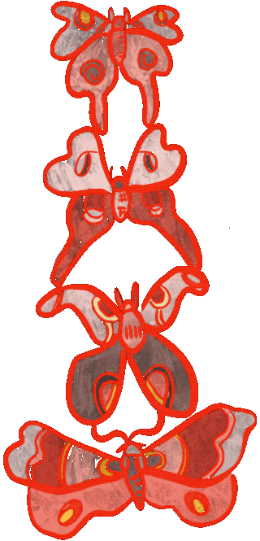

-

-
-
"My Mustache Which Is Very Young" (Fifth Wheel Press 2026) is a
poetry microchapbook built on the the framework of
question-and-answer poems addressed to my surgeon. These questions
are organized around concerns that medical providers have had
historically and currently about trans patients’ authenticity. I
answer these questions directly and slantly about my own
experience navigating the American healthcare system. These poems
challenge the idea that a patient can be worthy or unworthy of a
sex change.